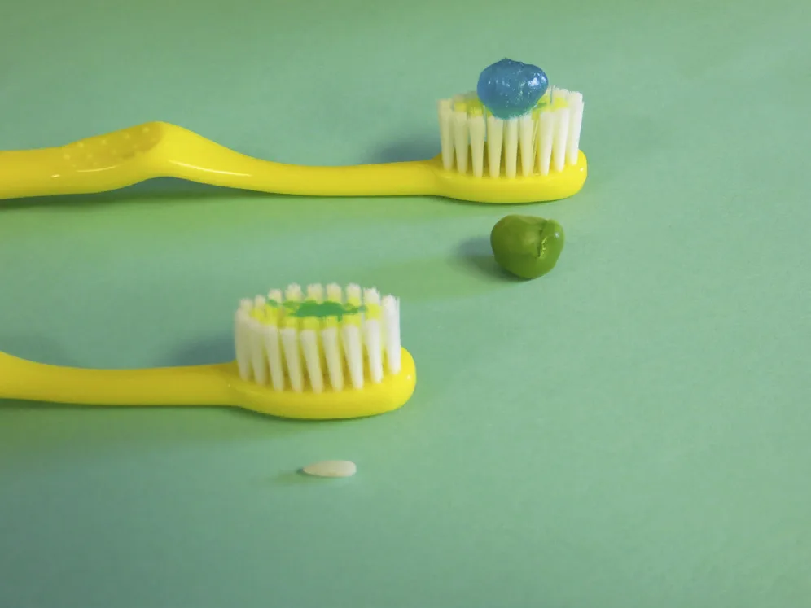
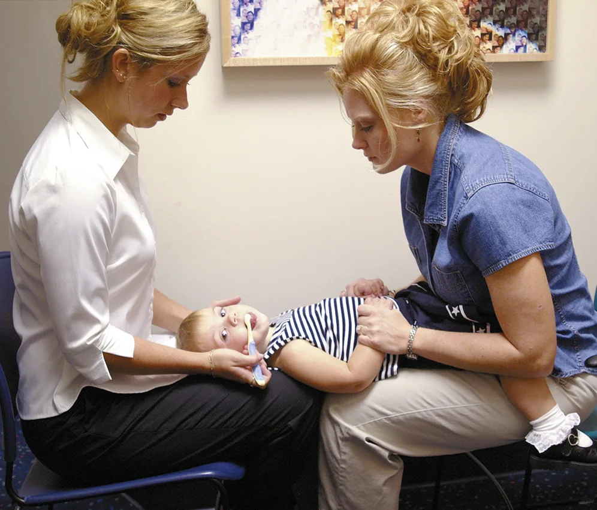

نسخه استخراجشده؛ ترجمه یا تأیید علمی انجام نشده است. وضعیت: captured
شروع: مسواک زدن از رویش اولین دندان آغاز میشود، دو بار در روز. پیش از آن، پاک کردن لثه با پارچهی تمیز عادت را جا میاندازد.
چه کسی مسواک میزند؟ این پرسش مهمتر از آن چیزی است که به نظر میرسد. مهارت حرکتی کودک تا حدود هفت تا هشت سالگی برای مسواک مؤثر کافی نیست.
یعنی تا آن سن، مسواک زدن کار بزرگتر است — و بعد از آن هم زیر نظارت ادامه مییابد.
یک معیار عملی برای والدین: تا وقتی کودک نمیتواند بند کفشش را خودش ببندد، دستش برای مسواک مؤثر هم آماده نیست.

وضعیت زانوبهزانو: دو بزرگتر روبهروی هم مینشینند و سر کودک روی زانوی نفر دوم قرار میگیرد. اینکه کودک دراز بکشد اهمیت دارد — دید و دسترسی کامل میشود و کنترل هم راحتتر است.
فلاس از کِی؟ نه بر پایهی سن، بلکه از زمانی که سطوح مجاور دندانها به هم میرسند و مسواک دیگر بینشان نمیرود. این معمولاً با بسته شدن تماس مولرهای شیری اتفاق میافتد.
ابزار: مسواک با موی نرم و سر کوچک متناسب با دهان کودک. مسواک برقی مجاز است ولی الزامی نیست — آنچه نتیجه را میسازد تکنیک و تداوم است، نه گران بودن ابزار.

نوع سؤال: ساخت کلمه · 3 خانه
حروف منبع: ک · ف · ش
نوع سؤال: ساخت کلمه · 5 خانه
حروف منبع: ت · ا · و · م · د